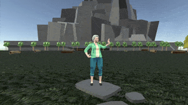

Projects
Oct 2024
- Deployed using Terraform, AWS, CI/CD through Github, Python, Bash and PostgreSQL
- Data is regularly extracted from OLTP database, transformed into a star-schema format and loaded into an OLAP data warehouse
- Processes are logged and alerts are triggered in the event of an error
- AWS Infrastructure: Lambda, S3, CloudWatch, SNS, EventBridge, StepFunction, Secrets Manager
- 95% Test coverage achieved through Test-Driven Development, unit and integration testing, and test database
Cloud Engineered CV Project
Jan - Feb 2025
- Created static website using cloud infrastructure and methodologies
- AWS Infrastrcture: Cloudfront, Route 53, S3, API Gateway, Lambda, DynamoDB
- Visitor Counter feature using AWS DynamoDB, Lambda and API Gateway
- Tested Javascript to make API calls to Lambda and external API to fetch trivia
- Deployed using Infrastructure as Code through Terraform
C# Unity-3D Video Game Project
Dec 2024

- Developed mini-adventure game featuring interactive puzzles and automated challenges
- Learned C# fundamentals to achieve MVP within tight deadline
- Features health bar, points, conditional logic, randomised enemy spawning and animations


{kind=link}